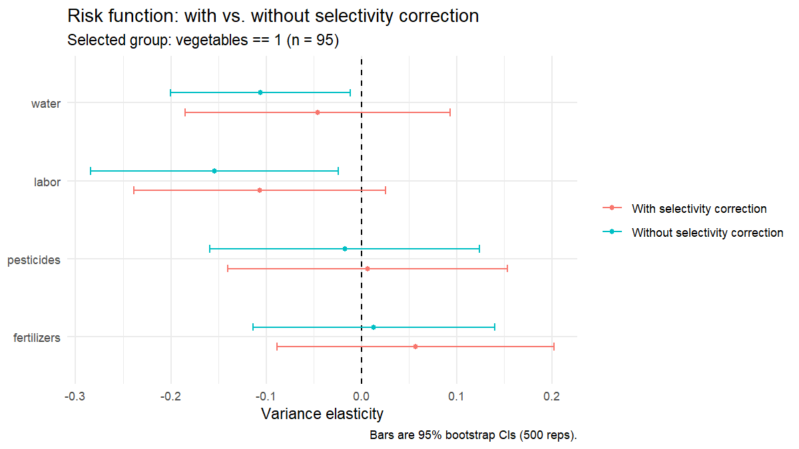

This vignette walks through the full JPselect pipeline on the
built-in synthetic dataset. The dataset roughly mimics the 239-farm
Cyprus sample in Table 1 of Koundouri & Nauges (2005); it is
intended for methodology demonstrations, not to
reproduce the paper’s exact point estimates. To use real data, pass any
data frame with the appropriate columns to jp_fit().
Fit the model
library(JPselect)
# Synthetic 239-farm dataset mimicking the paper's Cyprus sample
farms <- simulate_kiti_data(seed = 42)
fit <- jp_fit(
data = farms,
selection_var = "vegetables",
selection_covariates = c("rainfall", "irrigated", "dist_town",
"dist_coast", "experience"),
output_var = "revenue",
input_vars = c("fertilizers", "pesticides", "labor", "water"),
shifter_vars = c("machinery", "rainfall", "irrigated",
"dist_town", "dist_coast", "experience"),
bootstrap_reps = 500
)Inspect the results
Three methods are exposed on the jpfit object:
-
print(fit)— risk-function table plus a plain-language interpretation. -
summary(fit)— every stage of the pipeline end-to-end. -
plot(fit)— headline coefficient plot with vs. without correction.
print(fit)
Just-Pope production function with Heckman selection
Koundouri & Nauges (2005) three-step procedure
-------------------------------------------------------
Selection equation : vegetables ~ rainfall + irrigated + dist_town + dist_coast + experience
Output : revenue
Inputs : fertilizers, pesticides, labor, water
Sample : 239 total, 95 selected (vegetables == 1)
Bootstrap reps : 500
Risk function coefficients (variance elasticities):
Input Coef_with SE_with t_with Coef_without SE_without t_without
fertilizers 0.057 0.074 0.766 0.013 0.065 0.202
pesticides 0.007 0.075 0.089 -0.018 0.072 -0.242
labor -0.107 0.067 -1.588 -0.154 0.066 -2.331
water -0.046 0.071 -0.648 -0.106 0.048 -2.206
-------------------------------------------------------
Interpretation
-------------------------------------------------------
At p < 0.10, with selectivity correction:
Risk-DECREASING inputs : (none)
Risk-INCREASING inputs : (none)
Does selectivity correction change the conclusion?
labor : significant without correction (p=0.022) but NOT significant once corrected (p=0.116)
water : significant without correction (p=0.030) but NOT significant once corrected (p=0.519)
Selection-bias test (Mill's ratio in the mean function):
coef = +0.527, p = 0.036 -- selection bias DETECTED.
Prefer the 'with correction' column above.
summary(fit)
summary(fit) prints all three stages of the procedure
end-to-end: the probit selection equation (Step 1), the linear-quadratic
mean production function with the Mill’s ratio (Step 2), and the
with/without selectivity comparison for the risk function (Step 3).
======================================================================
Just-Pope production function with Heckman selection
Koundouri & Nauges (2005) three-step procedure
======================================================================
Selection variable : vegetables
Sample : 95 selected of 239 (39.7%)
Bootstrap reps : 500
----- STEP 1. Probit selection equation -----
Variable Coefficient Std.Error Statistic p.Value Sig
(Intercept) 0.618 0.674 0.917 0.359
rainfall -0.032 0.022 -1.419 0.156
irrigated 0.014 0.004 3.866 0.000 ***
dist_town 0.024 0.018 1.362 0.173
dist_coast -0.057 0.023 -2.437 0.015 **
experience -0.019 0.007 -2.664 0.008 ***
----- STEP 2. Mean production function (WITH selectivity) -----
Adjusted R-squared: 0.964
Variable Coefficient Std.Error Statistic p.Value Sig
(Intercept) 0.137 0.124 1.103 0.274
fertilizers 0.013 0.016 0.818 0.416
pesticides 0.036 0.012 3.043 0.003 ***
labor 0.042 0.011 3.684 0.000 ***
water 0.130 0.009 14.048 0.000 ***
I(fertilizers^2) 0.002 0.001 1.277 0.206
I(pesticides^2) 0.005 0.002 3.314 0.001 ***
I(labor^2) -0.000 0.002 -0.060 0.952
I(water^2) 0.002 0.001 1.782 0.079 *
machinery 0.069 0.011 6.453 0.000 ***
rainfall -0.199 0.125 -1.590 0.116
irrigated 0.467 0.103 4.555 0.000 ***
dist_town 0.184 0.045 4.115 0.000 ***
dist_coast -0.176 0.060 -2.944 0.004 ***
experience -0.211 0.068 -3.081 0.003 ***
imr_vegetables 0.527 0.247 2.135 0.036 **
fertilizers:pesticides 0.020 0.007 2.848 0.006 ***
fertilizers:labor -0.003 0.001 -2.319 0.023 **
fertilizers:water -0.005 0.004 -1.479 0.144
pesticides:labor 0.001 0.003 0.407 0.685
pesticides:water -0.004 0.001 -3.163 0.002 ***
labor:water 0.004 0.004 0.986 0.327
----- STEP 3. Risk function: with vs without selectivity -----
Input Coef_with SE_with t_with Coef_without SE_without t_without
fertilizers 0.057 0.074 0.766 0.013 0.065 0.202
pesticides 0.007 0.075 0.089 -0.018 0.072 -0.242
labor -0.107 0.067 -1.588 -0.154 0.066 -2.331
water -0.046 0.071 -0.648 -0.106 0.048 -2.206summary() also appends the same interpretation block
that print(fit) shows at the bottom.
plot(fit)

Each input appears twice, once estimated with the Heckman correction
(red) and once without (teal). When the two estimates disagree the
selectivity bias is visible at a glance: here, labor and
water look significantly risk-decreasing only in the
uncorrected (teal) specification, matching the headline finding of the
paper.
Reproducing the paper’s tables
An example script that runs the full pipeline for both the vegetables
and cereals groups from the paper and saves coefficient plots to
./figures/ ships with the package:
source(system.file("examples", "replicate_koundouri_2005.R",
package = "JPselect"))